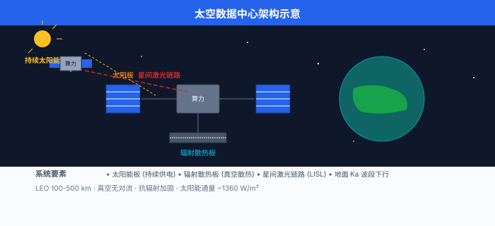
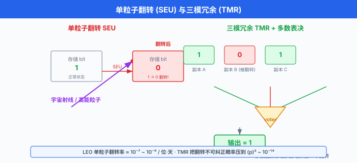
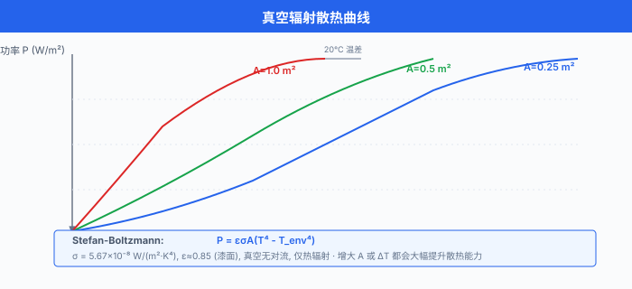

太空数据中心¶
一句话总结：太空数据中心把算力搬到近地轨道甚至月球，用持续太阳能与真空辐射散热绕过地面的能耗瓶颈，同时面临辐射、热管理与光通信的硬约束，是 AI 基础设施的下一个十年级赌注。
🗺️ 本章导览¶
- 本章覆盖前沿 AI：量子 ML → 神经形态 → 太空数据中心 (本节) → 去中心化 AI → 脑机接口
- 01. 量子机器学习：用量子电路当神经层，在特定问题上寻经典算法之外的加速
- 02. 神经形态计算：脉冲神经网 + 类脑硬件，主打边缘低功耗
- 03. 太空数据中心 (本节)：把数据中心搬到天上，用轨道算力跑 AI
- 04. 去中心化 AI：联邦学习、加密计算、分布式推理
- 05. 脑机接口：让大脑直接与机器对话
本节为提纲，原作以 bullet 列出太空数据中心的核心议题，中文版按同一结构展开每条要点，并补充商业尝试、技术挑战与未来展望.
1. 为什么把数据中心搬上天¶
过去十年，训练一个前沿大语言模型 (Large Language Model, LLM) 的算力大约每 6 个月翻一倍，远超摩尔定律。 一块 Nvidia H100 单卡功耗约 700 W，一万卡集群瞬时功耗就是 7 MW，再加上散热与网络设备，一个超万卡集群园区动辄几十兆瓦 (megawatt, MW)，一座吉瓦 (gigawatt, GW) 级超算中心已被多家头部公司列入长期规划1. 与算力同步膨胀的，是电力与水。 一份被反复引用的估算称，到 2030 年全球数据中心耗电可能占到总发电量的 4%~8%1. 训练一次千亿参数级别模型的电费，已是百万美元量级，散热用的水冷蒸发也在挑战当地水资源。
这股焦虑把一部分工程师的目光从地面往上抬。 太空看上去是一个"天生冷酷"的算力乐园:
- 能源：地球同步轨道 (Geostationary Orbit, GEO) 与近地轨道 (Low Earth Orbit, LEO) 上的卫星，每年接收的太阳辐照度 (solar irradiance) 高达约 1361 W/m² (太阳常数 \(S_0\))，而且没有昼夜交替、没有云层遮挡，一天 24 小时都是"白天". 相比之下，地面光伏受昼夜、天气、纬度影响，等效满发小时通常不到 2000 小时/年，太空光伏能轻松做到 8000+ 小时/年。
- 散热：太空是近乎完美的真空，没有空气对流，只能靠热辐射 (thermal radiation) 把热量散出去。 这看似是限制，但反过来也意味着——只要表面积够大、温差够高，散热效率反而非常可观。 一块深色辐射板在 -20°C 表面温度下，每平方米能稳定散掉约 400 W 热量，全靠 Stefan-Boltzmann 定律:
其中 \(\sigma = 5.67 \times 10^{-8} \, \text{W} \cdot \text{m}^{-2} \cdot \text{K}^{-4}\) 是斯特藩-玻尔兹曼常数，\(\varepsilon\) 是表面发射率 (深色涂层可达 0.9+), \(T\) 是辐射面温度，\(T_{\text{space}} \approx 3 \, \text{K}\) 是深空背景温度。
- 地理：不需要和城市抢电抢水，不需要购买或平整土地。 在轨数据中心是"无地皮"基础设施。
这三个理由合起来，让一些先驱企业开始认真计算：在天上 1 W 的算力，到底能不能比地面便宜?
简单做个量级估算，就能感受到太空能源的"暴击":
- 太空太阳能电池 (三五族砷化镓，GaAs) 光电转换效率约 30%, 1 m² 太阳板在 LEO 上大约能持续输出 1300 × 0.30 ≈ 400 W 电功率。 一颗展开后总太阳板面积 200 m² 的卫星，就能产生 80 kW 持续电力，够给一座小型超算供电。
- 同等面积的地面光伏 (效率 22%，等效满发 1500 小时/年)，年发电约 33 kWh/m²·年，是太空的不到 1/10. 因为太空是 8760 小时满发。
不过，太空电力的"账面便宜"还得扣掉发射成本。 一颗 80 kW 量级的卫星，发射质量通常 5–10 吨，单次发射报价 5000 万到几亿美元 (取决于运载火箭与轨道). 把这部分折算到 5–10 年的卫星寿命里，才是真实的"太空电力单价".
另一个被反复讨论的角度是"碳排放与水耗". 一座 100 MW 数据中心，水冷蒸发损耗在炎热地区可达每日数百万升；而太空数据中心既不消耗水，也不直接产生碳排 (发射火箭的碳排另算). 从 ESG (Environmental, Social and Governance) 视角看，太空算力天生是"绿"的。
2. 商业尝试：从概念到飞行硬件¶
太空数据中心不是科幻。 2021 年以来，一批小公司先后把概念机、试验载荷送入轨道或登月:
Lonestar Data Holdings (美国). 这家佛罗里达创业公司 2022 年发射了一台名为 "Lonestar Independence" 的小型边缘存储载荷，搭载于 Intuitive Machines 的 Nova-C 着陆器上，目标是验证"在月球表面存储数据"的可行性。 2024 年他们宣布与多家航天机构合作，把"月球数据中心"作为灾害备份与离地球数据归档方案推向市场。
Axiom Space + Kepler Communications (美国 + 加拿大). Axiom Space 主营国际空间站商业舱段，Kepler Communications 运营 LEO 卫星星座。 两家在 2024 年宣布合作，把 Kepler 的光通信网络与 Axiom 的在轨计算节点结合，用于"在轨处理"遥感数据——也就是卫星拍到地球影像后，不必全部下行到地面，而是在天上先跑完 AI 推理，再把结果回传。 这一架构通常被称为"orbital data centre"或"in-orbit computing".
Ramon.Space (以色列). 提供"太空原生"的抗辐射计算与存储模块，单板功耗数百瓦，已经在多颗商业卫星上装机，用来做星上信号处理和 AI 推理。 他们把自己定位成"太空版 NVIDIA"，卖的不是整机，而是计算板。
Star Cloud 与 Lumen Orbit (美国). 两家更早期的初创公司，都提出了"兆瓦级在轨计算"愿景：用数百平方米的太阳能板 + GPU 集群组成一颗"算力卫星"，单星算力目标达到 100 PFLOPS 以上，相当于一座中型超算中心。
中国：星际荣耀 + 九天微星. 星际荣耀 (iSpace) 在 2023 年成功完成多次双曲线弹道飞行与入轨发射，具备小型运载能力，关注方包括星上 AI 推理与边缘计算。 九天微星 (CAS-IX) 是中国科学院微小卫星创新研究院孵化的商业航天公司，主打低轨物联网与算力星座，提出过"算力星"概念，用整星座拼成"天基计算集群". 此外，之江实验室、曙光信息产业 (Sugon) 等机构也都公开讨论过"星地协同计算"的架构，把天基算力作为地面算力的延伸。
还有一类不那么显眼但更接近落地的玩家：传统卫星运营商. Inmarsat、Iridium、Telesat 这些老牌卫星公司，都在 2020 年后悄悄升级载荷——把原本只能做透传的射频 (RF) 处理单元换成能跑 AI 推理的 SoC (System on Chip). 它们没有"数据中心"的标签，但事实上已经在天上跑着边缘 AI 了。
注意：上述大多仍是"愿景+早期样机"阶段，真正能在轨道上跑大模型推理的硬件，截至 2026 年仍是稀缺品。
3. 太空的四道难关¶
把地面数据中心搬上天，不是换个壳子这么简单。 太空环境给电子设备、热量和通信都出难题。
3.1 辐射：宇宙射线与单粒子翻转¶
高能宇宙射线 (cosmic rays) 与太阳高能粒子 (Solar Energetic Particles, SEP) 穿过航天器时，会在半导体里沉积电荷。 一个高能粒子打在 SRAM 单元或触发器上，就可能把一个 bit 从 0 翻成 1，或者让一个组合逻辑门产生一个错误脉冲。 这两种现象分别叫做单粒子翻转 (Single Event Upset, SEU) 与单粒子瞬态 (Single Event Transient, SET). 还有更严重的形式：单粒子闩锁 (Single Event Latchup, SEL) 与单粒子烧毁 (Single Event Burnout, SEB)，这两种会真正"毁掉"器件，一旦发生必须断电重启。
LEO 上的 SEU 率，通常用 LET (Linear Energy Transfer，线性能量转移) 阈值与翻转截面 (cross-section) 描述。 在没有特殊屏蔽的商用 SRAM 上，LEO 高度 (约 400–600 km)、太阳活动低年的 SEU 率约为 \(10^{-7}\) ~ \(10^{-5}\) 翻转/位·天，也就是一个 1 Gb 内存每天可能遇到 0.1 到 10 次翻转。 太阳耀斑爆发时，这个数字还能再翻 10 到 100 倍。
对 AI 芯片来说，辐射带来的麻烦不只是"几位错了". 大模型推理时，一旦 KV 缓存里的某个 token 嵌入 (embedding) 被翻成垃圾值，模型输出就可能突然"胡言乱语"，而且这种错误很难被察觉。 一个朴素的解决思路是冗余：三模冗余 (Triple Modular Redundancy, TMR) 让三个独立模块跑同一份计算，投票表决。 这能把错误率从 \(p\) 压到大约 \(p^2\) 量级，但代价是功耗 ×3、面积 ×3. 另一个思路是用 ECC 内存、奇偶校验，在软件层检测并纠正。 但 ECC 只能修一位错，多位错仍要重算或重启。
传统航天级芯片用 SOI (Silicon On Insulator) 工艺 + 加固单元库，单价是商用芯片的几百倍。 商业公司更愿意走另一条路：直接用商用 GPU/CPU，在系统层加自检与自愈 (self-healing)，通过定期 checkpoint + 上行重传恢复状态。 关键模块用 FPGA 或 ASIC 重做，容忍 SEU.
可以用一个简化的数学模型来估算 SEU 对训练的影响。 假设训练任务持续时间 \(T\) 小时，整集群共有 \(N\) bit 内存参与计算 (NV 显存 + DRAM + 寄存器)，单 bit SEU 率 \(\lambda\) (单位：翻转/位·秒). 整个训练过程期望出错次数为:
取 \(N = 10^{14}\) bit (典型万卡集群), \(\lambda = 10^{-12}\) 翻转/位·秒 (LEO 商用 SRAM), \(T = 168\) 小时 (一周) 代入:
也就是一周内有约 6000 万次单 bit 翻转。 这显然不能让裸跑的商用硬件撑过一场训练。 这也是为什么 TMR + ECC + checkpoint 是"太空训练"的标配组合。
3.2 热管理：只能"辐射散热"¶
地面数据中心的散热主力是风冷与水冷：把热量传给空气或水，再排到大气或冷却塔。 太空没空气也没水，唯一的散热途径是电磁辐射。 这意味着:
- 所有发热器件必须紧贴"辐射板"，通过热管 (heat pipe) 或泵驱两相回路把热量导到外壳。
- 散热功率严格受斯特藩-玻尔兹曼定律支配。 举例：一块发射率 0.9、表面积 1 m² 的辐射板，表面温度 80°C (353 K)，深空 3 K，能散掉的热功率是:
换言之，想在太空散掉 10 kW 热量，大致需要十几平方米的高发射率辐射板。 这也是为什么有人提议把卫星做成"长条状"或"花瓣状"，把尽可能多的表面暴露在深空里。
真空下，散热器设计还得避开"温差极限"：一旦表面温度过低 (比如低于 0°C)，散热功率会骤降。 所以太空数据中心的设计目标是让芯片结温 (junction temperature) 稳定在 60–85°C，既不烧芯片，又不浪费散热功率。
还有几个常被新手忽视的细节:
- 朝向：辐射板必须背对太阳与地球，否则会"反向吸热". LEO 卫星每 90 分钟绕地球一圈，散热面得能让出太阳入射的几何。
- 阴影 vs 阳光：进入地球阴影的几分钟里，卫星没有被太阳加热，散热反而更快。 设计要按"热平衡最差情形"算，即假设卫星全程阳光直射、辐射板背阳。
- 材料退化：高能紫外与等离子轰击会让涂层 (如白漆、二次表面镜) 的 \(\varepsilon\) 慢慢下降，设计寿命 5–10 年的卫星需要做老化补偿。
- 热膨胀：太空冷热循环从 +120°C 到 -150°C，芯片板与结构件热膨胀系数不匹配就会断焊。 用铝碳化硅 (AlSiC) 之类的低膨胀系数封装才能扛住。
一句话总结太空散热的工程难点：不是散不掉，而是"散得稳、散得久".
3.3 通信：激光 + 地面站¶
太空数据中心再强，也得把结果送回地面。 传统卫星通信用 Ku/Ka 波段射频 (Radio Frequency, RF)，单星下行带宽几百 Mbps 到几 Gbps. 但 RF 频谱拥挤、带宽受限，已经接近瓶颈。
新一代商业星座 (Starlink V2 Mini 及更新批次) 大量采用激光星间链路 (Laser Inter-Satellite Link, LISL)，卫星之间用近红外激光 (典型波长 1550 nm) 互联，链路速率可达数十 Gbps，时延极低。 一颗 Starlink V2 卫星上一般装 3 颗激光终端，4 颗终端就能在相邻卫星之间组成四面体拓扑，让数据可以多跳绕过地球遮挡。 用激光的好处还有：波束窄、抗干扰、不占无线电频谱。
从轨道到地面的最后一段"下行链路" (downlink)，通常仍靠 Ka 波段，因为大气对射频衰减比对激光小得多 (云雾雨雪对激光衰减很严重). 只有在晴朗的高海拔地面站，才能用激光直接下行。 因此，一个完整的"天基算力"系统通常长这样:
- 太空侧: LEO 星座，卫星之间用激光互联 (LISL)
- 地面侧：多座 Ka 波段地面站 (gateway)，接收下行结果
- 核心算力：在星座中的若干节点上运行大模型推理，处理遥感数据
整个星座的"端到端"带宽，受最慢的一段瓶颈限制。 一颗卫星每天有约 30 分钟能"看见"任意一座地面站，因此下行带宽是稀缺资源。 这进一步说明：太空数据中心的真正价值是"在天上跑完 AI 推理，把结论 (几个 GB) 而不是原始数据 (几十 TB) 送回地面".
一个简单的链路预算 (link budget) 计算，展示了激光星间链路为什么值得做。 自由空间损耗 (Free Space Path Loss, FSPL) 在距离 \(d\)、波长 \(\lambda\) 时为:
代入 LEO 邻星距离 \(d = 1000 \, \text{km}\), \(\lambda = 1550 \, \text{nm}\)，得到:
258 dB 的衰减看起来恐怖，但激光终端发射功率可以到 1 W 以上，接收望远镜口径几厘米到十几厘米，加上波束跟踪精度高，实际净速率仍能到几十 Gbps. 同样的预算如果改用 Ka 波段 (约 1 cm 波长), FSPL 只多几个 dB，但带宽 (MHz 量级) 与频谱占用都是问题。
3.4 维护：修不了，只能自己好¶
地面数据中心坏了可以派人，太空数据中心坏了几乎只能自愈 (self-healing). 这要求软硬件系统具备:
- 多模冗余：三模冗余 (TMR)、双机热备 (active-passive)
- 看门狗 (watchdog) 与自动重启
- 远程上传新模型与配置 (over-the-air update)
- 软件定义故障隔离：把有问题的模块从集群里踢掉
# 三模冗余投票的最小示例 (TMR voting)
# 三份独立计算, 取多数表决
def tmr_vote(results: list[int]) -> int:
assert len(results) == 3, "TMR 必须 3 份结果"
# 容错 1 份错: 取出现次数 >= 2 的值
counts = {}
for r in results:
counts[r] = counts.get(r, 0) + 1
# 多数票胜出
return max(counts, key=counts.get)
# 在轨 AI 推理的简化数据流 (伪代码)
# 强调: 原始图像不下传, 只回传推理结果
def onboard_pipeline(image_bytes: bytes, model_id: str) -> dict:
# 1) 解码
img = decode_image(image_bytes)
# 2) 预处理
x = preprocess(img)
# 3) 推理 (容错执行, 异常重试)
for attempt in range(3):
try:
y = model_registry[model_id].predict(x)
break
except SEUError as e:
log_error("SEU detected, retry", attempt=attempt, err=str(e))
continue
# 4) 压缩结果 (KB 级 JSON, 而非 MB 级原图)
result = {
"boxes": y.detections,
"score": y.confidence,
"model_id": model_id,
}
return compress(result, fmt="json+gzip")
# 自检 + 自动重启的简化 watch-dog 模式
# 适用于长寿命在轨服务
import time
class OnboardService:
def __init__(self, name: str):
self.name = name
self.healthy = True
self.last_heartbeat = time.time()
def heartbeat(self):
# 周期被外部定时器调用
self.last_heartbeat = time.time()
def check(self) -> str:
# 看门狗主循环
elapsed = time.time() - self.last_heartbeat
if elapsed > 30: # 30 秒无心跳
log_warn(f"{self.name} unresponsive, restarting")
self.restart()
return "restarted"
return "ok"
def restart(self):
# 释放旧资源, 重新初始化
self.release_resources()
self.__init__(self.name)
log_info(f"{self.name} back online")
4. 星链与中国星网：边缘算力的"前世今生"¶
说到太空算力，不能不提两大低轨星座：美国 SpaceX 的 Starlink 与中国"国网" (GW) 星座。
Starlink. 到 2025 年中，在轨 Starlink 卫星数已超过 7000 颗，是人类有史以来最大的卫星星座。 它们的主要任务是宽带互联网，但 SpaceX 同时在每颗 V2 卫星上加装了 AI 推理能力，用内置 GPU 处理信号路由、流量整形与星间激光拓扑优化。 一些分析认为，Starlink 已经在事实上成为"全球最大的分布式边缘计算平台"，只不过它对外暴露的接口只是"网络"，不是"AI API".
中国星网 (GW 星座). 中国卫星网络集团主导的"国网"计划，目标部署约 1.3 万颗低轨卫星，部分将支持星间激光链路与星上计算。 配合"千帆星座" (G60/Qianfan，由上海垣信卫星主导) 与"银河航天" (Galaxy Space) 等多个国内星座项目，中国正在快速搭建一张国产低轨宽带 + 算力网络。
边缘计算 (edge computing) 的核心动机是延迟。 在 LEO (高度 400–1200 km)，卫星到地面的单程时延约 1–4 ms，双向往返约 20 ms 量级，与地面 5G 网络延迟相当，比 GEO 卫星 (单程约 250 ms) 快一个数量级。 这意味着:
- 实时遥感分析：卫星拍到船只、火灾、洪水，在 100 ms 内完成检测，把警报送给地面
- 低延迟宽带：偏远地区游戏、视频会议不再卡顿
- 应急通信：地面基站毁坏时，卫星 + 边缘节点临时接管
一个简单的延迟模型是自由空间光程:
其中 \(h\) 是轨道高度，\(c = 3 \times 10^8 \, \text{m/s}\). 在 \(h = 500 \, \text{km}\) 处，\(t_{\text{RTT}} \approx 3.3 \, \text{ms}\) (光速极限，不含路由与处理).
4.1 星座 vs 单星：为什么"集群"比"巨无霸"更现实¶
直觉上，"一颗算力卫星能跑 100 PFLOPS" 比"100 颗卫星每颗跑 1 PFLOPS" 更省事——少操心组网，少操心协同。 但工程上，恰恰是相反:
- 发射约束：火箭整流罩直径通常 4–9 米，单星质量上限 10–15 吨 (Falcon 9 一次性载荷上限). 一颗"100 PFLOPS"卫星需要的散热板 + 太阳能板 + 散热结构，总质量很容易超 20 吨。
- 单点失效：一颗算力卫星一旦失效，整座数据中心就宕机。 星座则可以容忍若干颗失效，通过路由重算把任务挪到健康节点。
- 迭代速度：卫星硬件换代周期 3–5 年，单星架构每换代一次就是一次"生死抉择". 星座架构则可以滚动更新——每隔几个月补几颗新卫星，不必重做整张网。
- 覆盖均匀：星座天然在多个时区、多个纬度都有节点，任何地面用户都能"看到"至少一颗卫星；单颗 GEO 卫星虽然覆盖广，但延迟太高，不适合边缘 AI.
所以现实里，几乎所有严肃的"天基算力"方案都走星座路线：把每一颗卫星当作一个边缘节点，用激光星间链路 + 智能调度，让整个星座看起来像一台"分布式超算".
4.2 边缘计算的杀手锏：卫星 IoT + 在轨推理¶
低轨星座 + 边缘 AI 的组合，还有一个不那么显眼但极其实用的场景：卫星物联网 (Satellite IoT). 远洋货轮、跨境输油管、极地科考站、无人农场——这些场景既没有 4G/5G 覆盖，也没有稳定供电，但都需要"低频回传 + 偶尔 AI 推理". 卫星 IoT 模块终端便宜 (几百到几千美元)，配上 LEO 星座 + 在轨 AI 推理，就能在无人区实现"自动告警" 与"状态摘要".
这也解释了为什么很多卫星运营商开始把 AI 推理作为一项"内置服务"打包给客户——就像云厂商把 GPU 实例打包给开发者一样。
5. 与 AI 结合：太空训练的三大场景¶
把算力搬到太空，最直接受益的是 AI. 三类场景最值得展开:
5.1 训练大模型的候选地¶
在太空训 LLM，目前还停留在概念阶段。 表面上的吸引力：太阳能便宜、没有碳税、数据中心不用水冷。 但现实约束很硬:
- 通信瓶颈：万卡集群需要每节点 100 Gbps 量级的网络，在卫星之间搭出同等带宽，工程上几乎不可能
- 维护：训练任务持续数周，期间任何一颗卫星出错都需要自愈，否则训练报废
- 规模：即便把"算力卫星"做成 100 PFLOPS 的单星，也只相当于一座中型地面超算，比当前万卡集群小几个数量级
更现实的可能性，是把太空算力用作预训练后的持续学习 (continual learning) 节点，或者专门用来训练遥感大模型——毕竟训练数据本来就来自太空。
一个粗略的"单位算力成本"比较，可以帮助理解量级差距。 设:
- 地面数据中心：100 MW 电力支撑 50 PFLOPS，电力单价 $0.05/kWh, 等效满发 8000 小时/年, 硬件寿命 5 年, 折旧 + 电力 + 维护合计约 $0.10/kWh. 单位算力成本约:
- 太空"算力卫星": 80 kW 电力支撑 100 PFLOPS (极乐观假设)，卫星造价 + 发射按 $500M 摊到 7 年，单位算力成本会接近:
注意，这里把"电力"视为免费 (因为太阳能)，折算下来太空单位算力成本仍比地面高 30 倍以上。 想让太空算力真正便宜，必须 (a) 把卫星量产到数十颗 (摊薄 NRE，即一次性工程费用), (b) 让单星算力上 1 EFLOPS (Exa FLOPS，十亿亿次浮点每秒), (c) 把寿命拉到 10 年以上。 这三个条件短期都还做不到。
5.2 遥感数据实时处理 (Earth Observation AI)¶
这是太空数据中心最被看好的杀手锏。 现代对地观测卫星每天产生 TB 级影像，全部下行到地面再分析既费时又费钱。 如果卫星上就能跑深度学习模型——比如检测舰船、监测森林砍伐、量化洪水范围——就只需要把"结论" (几个 KB 到几 MB) 回传。
这一波浪潮的代表公司是 Planet Labs (美国，鸽群星座) 与 Pixxel (印度，高光谱星座). 它们已经在用星上 FPGA/SoC 做初筛，再配合地面 AI 做精细分析。 假以时日，星上大模型会把这一流程完全搬到天上。
5.3 主权 AI (Sovereign AI) 与战略地位¶
太空数据中心的另一面是地缘政治. 谁掌握"在轨算力"，谁就在战时、灾时、外交封锁下拥有不依赖地面互联网的计算与通信能力。 这也是为什么中国、美国、欧盟都在加速部署自己的低轨星座与抗辐射芯片。 "主权 AI"这个词最近被频繁使用，强调"算力即主权"——这与"太空即领土"的逻辑是相通的。
太空数据中心和太空太阳能 (Space-Based Solar Power, SBSP) 也经常被一起讨论。 SBSP 的想法是把巨型太阳能板放在 GEO，收集能量后用微波或激光回传地面；而太空数据中心则是"在轨直接把能源变成算力，再把结果回传". 后者省去了"能量转换 + 回传"的损耗，逻辑上更优雅。
5.4 地面 vs 太空：一张粗略对比表¶
下表把"地面超算中心"与"太空数据中心"在几个关键维度上做个快照对比，帮助读者一眼看清差异。
| 维度 | 地面超算中心 | 太空数据中心 |
|---|---|---|
| 能源 | 电网 (化石 + 可再生混合) | 持续太阳能 |
| 冷却 | 风冷 + 水冷 (含蒸发) | 真空辐射散热 |
| 维护 | 可派人维修，几小时响应 | 不可派人，必须自愈 |
| 通信 | 高速光纤 (Tbps 量级) | 激光星间 + RF 下行 (Gbps 量级) |
| 单点失效 | 影响有限 (有冗余) | 卫星故障 = 节点丢失 |
| 建设周期 | 1–3 年 | 3–5 年 (含发射) |
| 单位算力成本 | 量级参考 $2/PLOP | 极乐观约 $70/PLOP |
| 主要瓶颈 | 电力 + 水 | 散热 + 带宽 + 抗辐射 |
| 监管复杂度 | 中 (环评、能耗审批) | 高 (出口管制、频谱协调) |
| 战略价值 | 商业 + 科研 | 国家安全 + 主权 AI |
注意："单位算力成本"那一行的数字仅作量级参考，真实数字因架构、批量、寿命差异巨大。 但量级关系 (太空短期比地面贵一个数量级以上) 是稳定的。
6. 未来展望：十年内小规模商业化¶
把上面所有的可行性拼到一起，我们可以对未来十年做一个粗略预测:
- 2026–2028：单星数十 TOPS (Tera Operations Per Second，万亿次操作每秒) 量级的星上 AI 推理成为常态，主要服务遥感与通信负载。 多个国家发射专门的"算力试验星".
- 2028–2032: 100 PFLOPS (Peta FLOPS，千万亿次浮点每秒) 量级的"兆瓦级算力卫星"开始出现，激光星间链路商用，地面端建成全球 Ka 波段地面站网络。 太空数据中心开始承接商业遥感 AI 与部分科研计算。
- 2032+：多星组成的"天基算力云"成为现实，太空数据中心开始作为地面云的弹性延伸。 但要让 LLM 训练完全跑在太空，还得等到发射成本进一步下降 (目前约 $1500–$3000/kg 到 LEO, SpaceX Starship 目标 $100/kg 量级) 与星间激光组网带宽再上一个数量级。
2025 年 Google 公开了一项名为 Project Suncatcher 的研究提案，计划用卫星搭载 TPU 集群做太空机器学习，初步测算认为在太空中训练一个特定规模模型的能耗成本，可以低于地面。 这类"超大规模 + 在轨算力"的研究，是判断未来十年趋势的重要风向标。
6.1 一个粗糙的"何时商业化"判断框架¶
与其只凭直觉押时间，不如列一份"商业化门槛清单"，看看每个条件离"绿灯"还差多远:
- 发射成本: Falcon 9 重型复用报价约 $2000–$3000/kg 到 LEO; Starship 全面复用后，业界估算 $100–$200/kg. 当前约 50% 达成。
- 激光星间链路: Starlink V2 Mini 已商用，单跳数十 Gbps，多跳组网可行。 当前约 70% 达成。
- 抗辐射 GPU：多家厂商已发布"空间增强版" GPU 与参考设计；国产抗辐射 GPGPU 也在多家院所推进。 当前约 50% 达成。
- 星上散热：现有热管 + 辐射板可散 1–3 kW；兆瓦级 (1 MW) 散热仍属研发阶段。 当前约 30% 达成。
- 法规与频谱: ITU 频谱协调、出口管制 (美国 ITAR、中国军品出口管制) 是非技术门槛，但近两年进展快。 当前约 60% 达成。
把这些指标简单平均，整体进度大约 50%——这正是"商业化前夜"的典型状态。 也就是说，2028–2030 大概率会出现小规模、可商用的太空数据中心业务，但 LLM 训练级别的算力完全上太空，还得再等一个产品周期。
6.2 留给读者的三个开放问题¶
- 如果 2035 年太空单位算力成本真的能压到和地面相当，哪些地面无法做的工作会率先上太空？持续学习的全球科学观测模型？不间断的暗物质搜索？全天候气候模拟?
- "主权 AI"如果延伸到"主权算力星座"，国际法 (Outer Space Treaty 1967) 是否需要更新？在轨算力是"领土"还是"公域"?
- 当一万颗低轨卫星同时运行 AI 模型，一次太阳风暴可能让所有模型同时输出"胡言乱语"——这是否构成一类新的系统性 AI 风险?
6.3 给读者的最小动手建议¶
如果读者读到这一节想自己动手玩一玩，最低成本的方式不是买卫星 (那要几千万美元起)，而是:
- 用 Skyfield 或 poliastro 这两个 Python 库，在自己的笔记本上模拟一颗低轨卫星的轨道，验证 Stefan-Boltzmann 散热公式与 FSPL 链路预算。
- 找一份公开的 Starlink TLE (Two-Line Element，两行轨道根数) 文件，用 STK 或免费的 Gpredict 软件追踪星座，观察每天的可见窗口。
- 关注 Planet Labs 的开放数据计划，下载几景 SkySat 影像，自己在本地跑一遍语义分割，对比"在地面跑" 与"假如在星上跑"的时延与带宽差异。
成本最低，但对"为什么太空数据中心值得做"这件事，是最有效的第一手感受。
6.4 进一步阅读与延伸资源¶
如果想继续深挖，下面几个方向都值得花一两周时间:
- 热辐射与航天器热控：经典教材 Spacecraft Thermal Control Handbook (David Gilmore). 它把 Stefan-Boltzmann、热管、两相流体回路讲得非常细，是太空散热工程必读。
- 抗辐射电子学：综述论文 Radiation Effects on Electronics 系列 (IEEE Nuclear and Space Radiation Effects Conference, NSREC) 每年更新，是抗辐射芯片设计的"风向标".
- 激光星间链路: CCSDS (Consultative Committee for Space Data Systems) 关于 Optical Communications 的标准文档，描述了 1550 nm 激光链路的协议层与物理层规范。
- 星座运维: SpaceX 与中国星网都在公开的 FCC / ITU 文件中提交过大量技术参数，想看真实数字，直接查这两家的备案文件比博客靠谱得多。
- AI + 太空：除了 Google Project Suncatcher, NASA 在轨 AI 推理项目 (例如 CogniSAT) 也是不错的参考；国内关注之江实验室、东方空间、星际荣耀的技术披露。
最后，一句不太严谨但很真实的话作为收尾：太空数据中心在 2026 年的状态，大致相当于"2008 年的云计算"——技术原理已经清楚，工程样板正在搭建，商业模式还没跑通，但所有人都在押它会很大。 想入场的工程师与学生，现在上车可能比 2030 年舒服得多。
而对正在读这一节的你来说，至少有一件事可以确定：下一个十年里，"算力" 不再只发生在城市的机房里，它会同时发生在 500 公里高空的轨道上。
把上面所有的可行性拼到一起，我们可以对未来十年做一个粗略预测:
- 2026–2028：单星数十 TOPS 量级的星上 AI 推理成为常态，主要服务遥感与通信负载。 多个国家发射专门的"算力试验星".
- 2028–2032: 100 PFLOPS 量级的"兆瓦级算力卫星"开始出现，激光星间链路商用，地面端建成全球 Ka 波段地面站网络。 太空数据中心开始承接商业遥感 AI 与部分科研计算。
- 2032+：多星组成的"天基算力云"成为现实，太空数据中心开始作为地面云的弹性延伸。 但要让 LLM 训练完全跑在太空，还得等到发射成本进一步下降 (目前约 $1500–$3000/kg 到 LEO, SpaceX Starship 目标 $100/kg 量级) 与星间激光组网带宽再上一个数量级。
2024 年 Google 公开了一项名为 Project Suncatcher 的研究提案，计划用卫星搭载 TPU 集群做太空机器学习，初步测算认为在太空中训练一个特定规模模型的能耗成本，可以低于地面。 这类"超大规模 + 在轨算力"的研究，是判断未来十年趋势的重要风向标。



📌 本节要点¶
- 太空数据中心的三大诱因：持续太阳能 (无昼夜/天气)、真空辐射散热、不与城市抢资源。
- 商业尝试: Lonestar (月球存储)、Axiom + Kepler (在轨计算)、Ramon.Space (抗辐射板卡)、Star Cloud / Lumen Orbit (兆瓦级愿景)，中国星际荣耀与九天微星亦有相关布局。
- 辐射挑战：宇宙射线引起 SEU/SET, LEO 单粒子翻转率约 \(10^{-7}\)–\(10^{-5}\) / 位·天；解法包括 TMR、ECC、自检与自愈。
- 热管理：真空无对流，只能靠 Stefan-Boltzmann 热辐射散热；表面积与温差是核心约束。
- 光通信：激光星间链路 (LISL) 是新一代星座标配，单跳可达数十 Gbps；地面下行仍主要靠 Ka 波段。
- 维护：无法人工维修，必须三模冗余 + 自愈 + 远程升级。
- Starlink 与 GW 星座：既是宽带网，也在演化为全球最大边缘计算平台，LEO 端到端延迟约 20 ms 量级。
- AI 三大场景：在轨训练 (远期)、遥感数据实时处理 (近期落地)、主权 AI 与战略算力。
- 十年展望: 2028 年前星上 AI 推理常态化，2030 年前后出现 100 PFLOPS 级算力卫星，完全取代地面训练仍需发射成本与组网带宽进一步突破。
参考资料¶
-
IEA, "Data Centres and Data Transmission Networks", Electricity 2024 / 2025 系列报告，估算全球数据中心与数据网络 2024 年耗电约 415 TWh，占全球总用电量约 1.5%，并预测 2030 年前将翻倍至 945 TWh 左右，是讨论"地面电力瓶颈"最常被引用的来源之一。 ↩↩
-
SpaceX 官方关于 Starlink V2 Mini 卫星的公开资料与历次 Falcon 9 任务说明，提到 V2 Mini 起搭载 3 颗激光终端，支持 Gb/s 量级星间链路。 ↩
-
Google Research Blog, "An early look at Project Suncatcher" (2025)，公开了一份关于"卫星 + TPU 集群进行太空机器学习"的可行性研究。 ↩
-
Planet Labs 与 Pixxel 公司官网及历次公开访谈，描述其星座如何把 AI 推理下沉到卫星载荷。 ↩
-
NASA/ESA 在轨辐照试验 (如 CREAM, ICESat-2) 的公开技术报告，给出商用 SRAM 在 LEO 太阳极小年的典型 SEU 率区间。 ↩